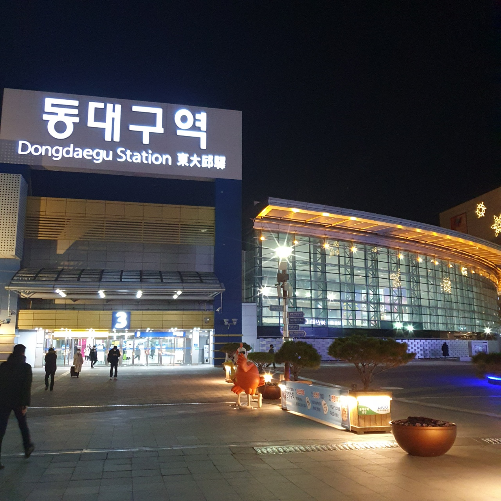
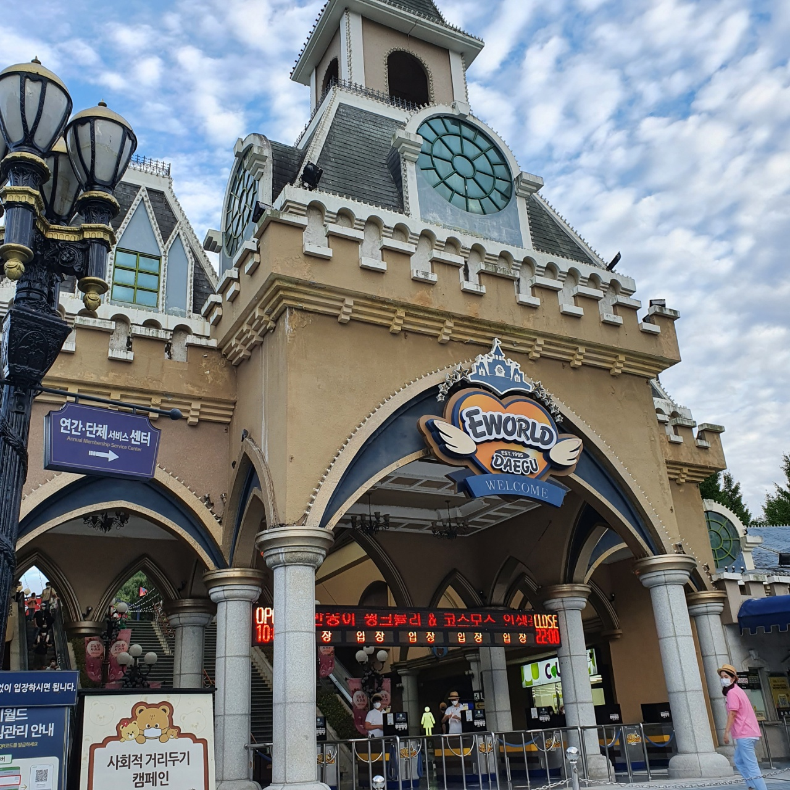
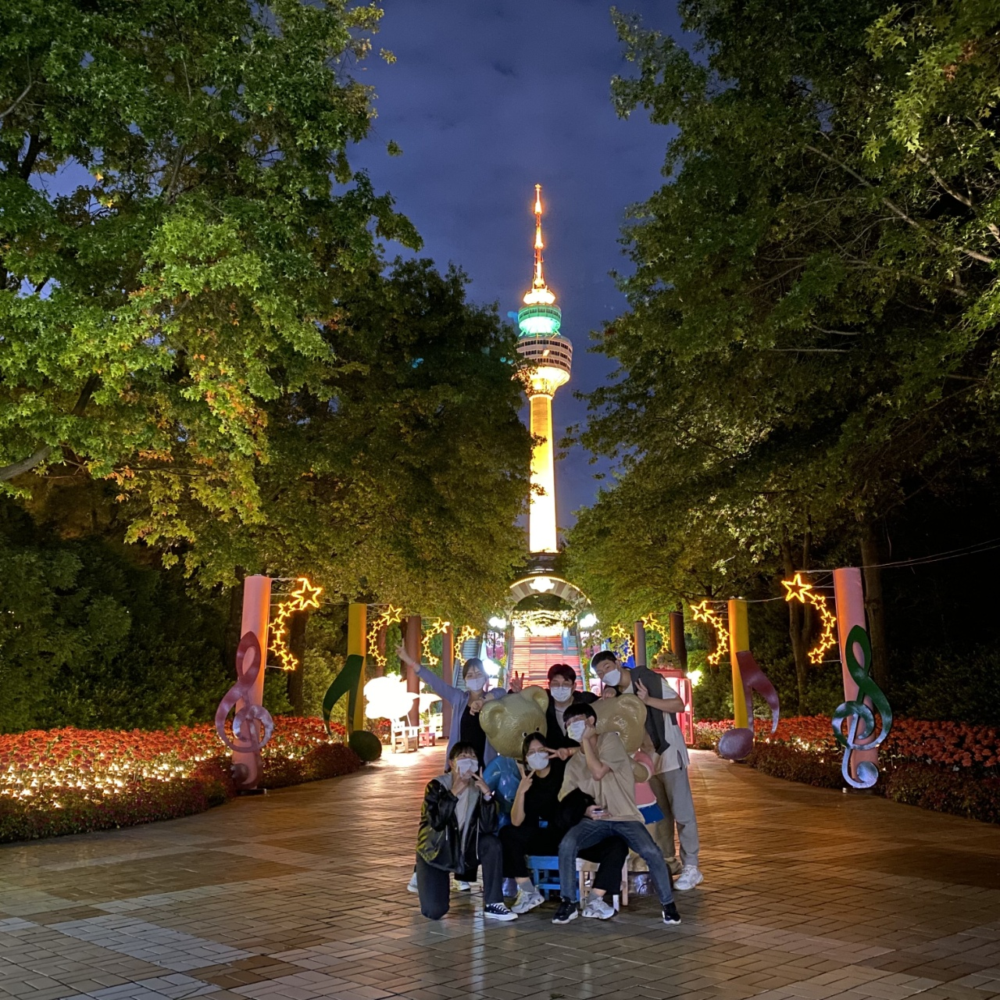
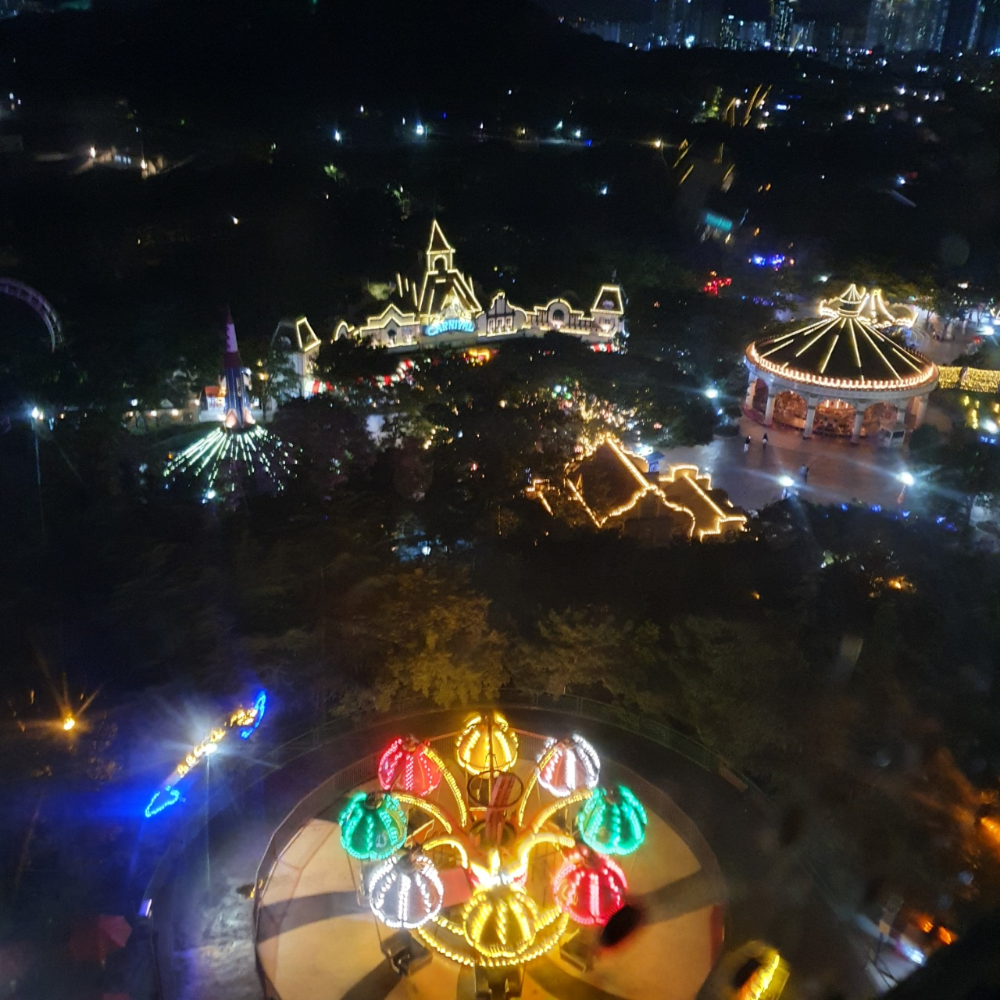
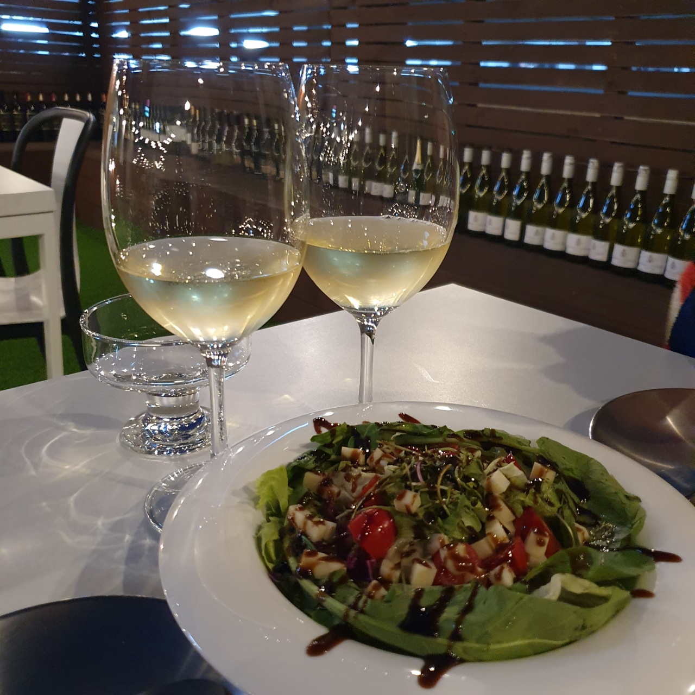
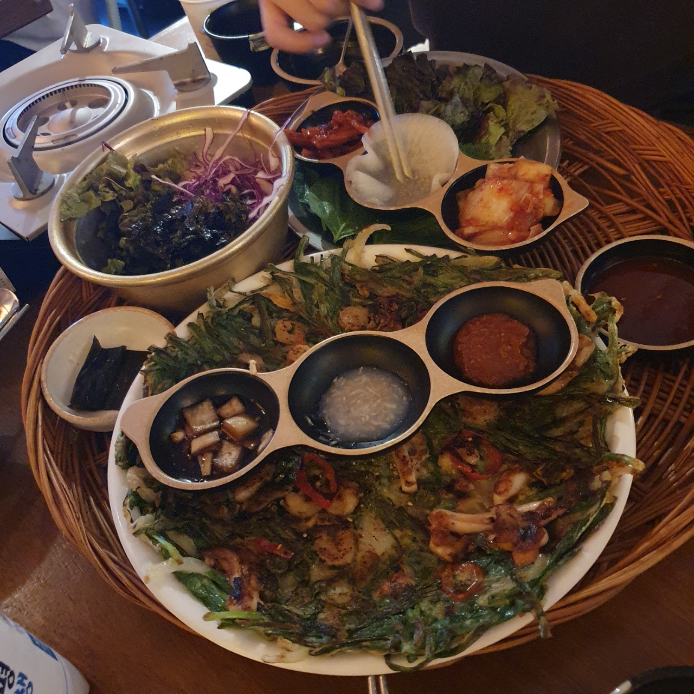

추천 일정
(1일차) 동대구역 --> 이월드 --> 숙소
(2일차) 반월당역 --> 동성로 --> 숙소
(3일차) 숙소 --> 앞산 카페거리 --> 동대구역
1일차
대구는 동대구역과 동대구복합환승센터와 신세계 백화점이 붙어있어요.그래서 환승하기에 용이하고, 시간이 남을때 구경할게 많아요.
참고로 신세계 지하에 정말 맛잇는 음식들을 많이 팔아요.

동대구역:네이버지도
동대구역에 도착하면 택시(약 10,800)를 타고 이월드에 가요.

이월드 홈페이지
이월드에서 놀이기구를 타고 놀다가 밤에는 이쁜사진을 찍어요.
재미있는 놀이기구도 많고 이월드는 계절마다 이쁜꽃을 많이 심어두기 떄문에 사진찍기에 이뻐요.
미리 이월드에 무엇이 있는지 알아두고 가면 좋을것같아요.

2일차
어제 힘들었던만큼 느긋하게 일어나서 반월당역과 중앙로 사이에있는 동성로에 가요.
대구는 맛집 천국으로 유명한 만큼 맛있는 음식이 정말 많아요.
그러니 반월당 지하상가와 동성로에서 맛있는 음식과 카페를 가보는게 좋아요.
옷가게도 정말 많으니 옷을사거나 악세사리를 사는등 쇼핑을 하는 재미도 있어요.
반월당역:네이버지도

동성로는 밤이되면완전 다른도시로 바껴요.
동성로 로데오거리 한쪽에는 술집들이 모여있어서 밤에는 대구의 홍대라고 할정도로 젊은 사람들이 정말 많아요.
맛집이 많은 만큼 어느가게를 가도 맛있는 안주를 먹을 수 있어요.
사람들도 많고 구경하는 재미가 있어요.
3일차
2일간 열심히 논만큼 3일차는 앞산 카페거리에가서 커피한잔하며 이쁜 카페에서 여유롭게 보내도록해요.
앞산카페거리:네이버지도
저는 대구에 정말 자주가는데, 갈때마다 새롭고 맛있는 음식을 많이 먹어볼 수 있어요.
여러 음식들을 맛보며 즐겁게 보내면 좋을 거 같아요.